None - Fade - Slide - Convex - Concave - Zoom
选择班级
幻灯片样式
Black (default) -
White -
League -
Sky -
Beige -
Simple
Serif -
Blood -
Night -
Moon -
Solarized
大自然简直就是一个神奇的魔术师，她把地球表面的景观塑造得如此惟妙惟肖。阅读南斯拉夫的“猫咪”山图，完成1、2题。
1.猫咪山形态的根本力量来
源是( )
A.太阳辐射
B.岩浆活动
C.大气
D.流水
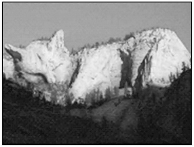2.猫咪山所在地区的地表形态是( )
A.内力作用单独形成的
B.外力作用单独形成的
C.内、外力作用共同形成的
D.板块运动形成的
下图是某地区地表形态演变示意图，读图完成3、4题。
3.引起该地区地表形态演变最主要的外力作用是( )
A.流水
B.风力
C.冰川
D.波浪
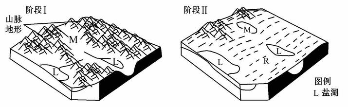4.阶段Ⅱ中，R地常见的地貌类型是( )
A.冰斗
B.风蚀蘑菇
C.海蚀崖
D.瀑布陡崖
读下面的地形素描图或地质图，回答5、6题。
5.下列说法最全面的是( )
A.甲、乙均为流水侵蚀作用形成的地貌
B.乙、丙地貌所受外力作用相同
C.甲、乙、丙均为外力作用形成的地貌
D.甲、乙、丙、丁的地貌成因一样
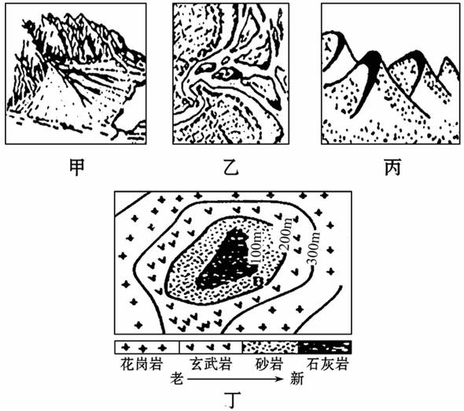6.下列关于甲、乙、丙、丁四幅图所示地形对人类生产生活的影响，说法正确的是( )
①甲地形区的聚落往往表现出明显的条带状，蜿蜒分布于山前
②一般来说，乙地形区土壤肥沃、水源充足，往往成为人类的聚居地
③丙地所在气候区，乡村聚落多集中连片分布
④丁地形区应大力发展水泥加工业，以提高当地的经济发展水平，从而不断提高人们的生活质量
A.①②
B.②③④
C.①②③
D.③④
读下面的地质剖面示意图，回答7、8题。
7.下列有关图示①②③④四处物质的判断，正确的是( )
①——沉积岩 ②——侵入岩
③——变质岩 ④——岩浆
A.①②
B.①③
C.③④
D.②④
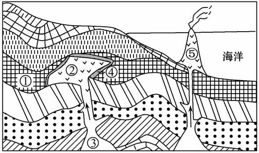8.下列各种岩石和岩浆之间的转换过程中，正确反映地壳物质循环的是( )
A.①—②—③—④—①
B.③—⑤或②—①—④—③
C.③—①—④—②
D.②—④—①—⑤
(2011·兖州高一检测)台湾某学校组织野外地质考察，结合某同学绘制的地貌素描图，完成9～11题。
9．当地主要山脉的走向是( )
A．南北走向
B．东西走向
C．东北—西南走向
D．西北—东南走向
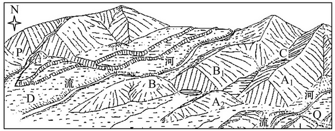10．关于C处和D处地貌的形成原因，下列说法较为科学的是
A．C处—流水侵蚀作用 D处—流水沉积作用
B．C处—风力侵蚀作用 D处—风力沉积作用
C．C处—流水沉积作用 D处—流水侵蚀作用
D．C处—风力沉积作用 D处—风力侵蚀作用
11．在PQ这条考察线路上，这名同学发现了一些有趣的现象：两侧的三角形陡崖一字排开；A1与A2、B1与B2山脉并不相连，但岩石类型和组合形态相同；多条河流不约而同地拐了个弯。合理的解释是( )
①PQ线两侧的地层形成在同一地质时代
②PQ线两侧的地层发生水平错位
③PQ线的地质构造是向斜谷地
④PQ线的地质构造是断层
A.①②③B.②③④C.①②④D.①③④
读下列沉积岩层地质剖面图，完成12、13题。
12．图中a、b、c、d四岩层由老
到新的排序是( )
A. d → c → b → a
B. a → b → c → d
C. b → c → a → d
D. a → c → d → b
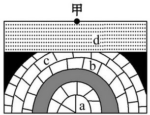13．在甲处打井，可能打出( )
①天然气 ②石油 ③煤
A．①③
B．①②
C．①②③
D．②③
读某地海陆轮廓和板块示意图(如下图)，回答14、15题。
14.按照六大板块的划分，M小板块属于( )
A.亚欧板块
B.印度洋板块
C.非洲板块
D.太平洋板块
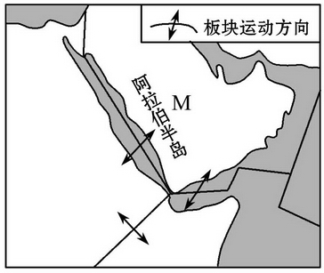15.图中所示的边界属于( )
A.陆地区域边界
B.板块消亡边界
C.海洋区域边界
D.板块生长边界
读西欧某地区地质图，回答16、17题。
16.该地地势特点是( )
A．中间低四周高
B．地势平坦
C．中间高四周低
D．西高东低
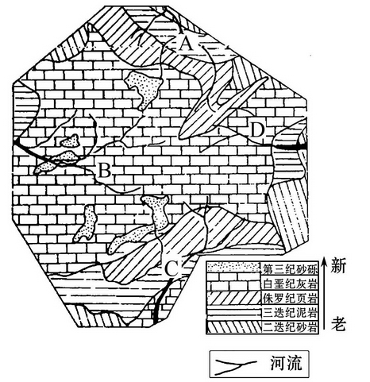17.从A-C作一地质剖面，可判断此剖面的地质构造是( )
A．背斜
B．向斜
C．地垒
D．地堑
(2010·重庆文综)下图是某区域地质地貌剖面图。读图，回答18、19题。
18.图中高速公路隧道穿过( )
A.向斜谷
B.背斜谷
C.向斜山
D.背斜山
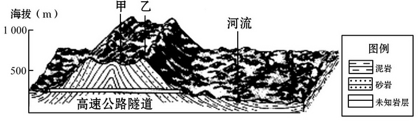19.图中甲地多见石芽、溶洞等地形，推断未知岩层应为
( )
A．页岩
B.板岩
C.石灰岩
D.花岗岩
下图为我国局部地区示意图，读图回答20、21题。
20．甲处地形名称及其形成的主要地质作用分别是( )
A．冲积扇，流水沉积作用
B．冲积平原，流水侵蚀作用
C．三角洲，流水沉积作用
D．三角洲，海浪侵蚀作用
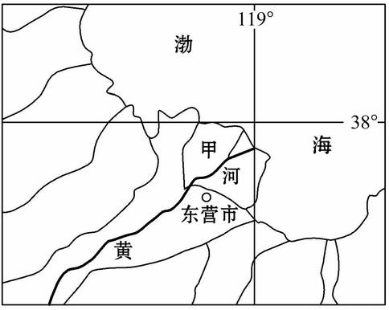21.近年来，甲处地形面积增长速度明显减慢，主要是因为
( )
A．海平面上升
B．沿海地壳下沉
C．黄河入海泥沙减少
D．该区植树造林
广西西部有个乐业县，这里有着世界上最大的天坑群。据中国地质科学院岩溶研究所专家最近证实，在巴马瑶族自治县境内发现了两个超大级别的天坑(号龙天坑和交乐天坑)。记者下天坑踏勘时，但见地下水从乱石堆中汩汩流出，进入小湖后浸入地下，不知去向。据此完成22、23题。
22．乐业县天坑群的形成原因最可能是( )
A．陨石坑
B．地壳运动，断裂下陷
C．人工开山取石
D．流水的溶蚀、侵蚀作用
23．对“地下水从乱石堆中汩汩流出，进入小湖后浸入地下，不知去向”理解正确的是( )
A．小湖里的水浸入地下不知去向，水仍在当地地下土壤中
B．水汇入地下暗河，不知流向何方
C．地下不可能再有地下河流存在
D．该地区水和喀斯特作用无关
读下图，回答24、25题。
24.河流对城市区位的影响很大，图中四城市相对处于有利区位的是( )
A.A
B.B
C.C
D.D
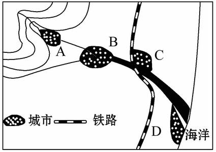25.受地形、河流等条件影响，B城市地域形态和下列哪一城市最接近( )
A.上海
B.重庆
C.西安
D.兰州
26.读岩石圈物质循环示意图，回答下列问题。(15分)
(1)填出图中字母代表的三大类岩石名称。 a和b是[岩浆]岩、c是[变质]岩、 d是[沉积]岩。
(2)把图中数字与其对应的岩石圈
物质循环过程用直线连接起来。
(3)从褶皱的弯曲形态判断，图中甲地是[向斜];从地表的形态判断，该地的地貌是[山岭]。
(4)丙地岩体相对两侧岩体的位移方向是[上升](上升或下降)。
(5)乙地的地貌最可能是下图中的[C]图。
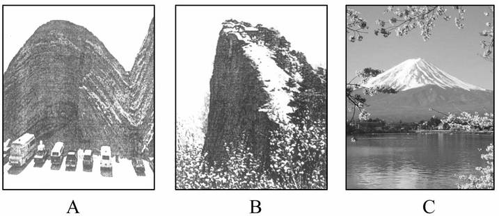27.读某地的地质剖面图，试试当一位地质工程师，对下列问题作一些简要分析。(19分)
(1)图示地质构造类型有：甲_______，乙_______，a、b________。
(2)该地地壳受到了________方向力的作用，属于________力(拉张力或挤压力)。当时的地壳运动表现为________运动和________运动，起主导作用的是________运动。
(3)在地貌上，甲构造顶部岩层缺失的原因是___________；褶皱构造上覆岩石是由_________作用形成的；据此，可推断这一地区的地壳运动情况为______________。
(4)如果在这里修建一条东西向地下隧道，应该选择甲地还是乙地？_________，原因是__________________；若要想打一眼井，应选择在_________；钻探石油应选择在地，原因是__________________________________________。
(5)在甲、乙、a、b四处最适宜建水库大坝的是__________
________。易发生地震灾害的是___________________。
(6)a、b所示的区域与下列地区成因相同的是(双选)( )
A.喜马拉雅山
B.泰山
C.渭河平原
D.汾河谷地
28.读材料，回答下列问题。(16分)
材料 近日国务院通过了《黄河三角洲高效生态经济区发展规划》，黄河三角洲的开发建设正式上升为国家战略。据了解，滨州作为黄河三角洲开发建设的主战场，2010年将高举黄河三角洲高效生态经济区建设这面大旗，做好《规划》的组织实施。黄河三角洲有河流地貌景观、沉积构造及古海陆交互线遗迹。河流地貌景观主要有河成高地、边滩、心滩、黄河各期流路、天然堤、决口扇、沉积层序剖面等；沉积构造主要有流水作用形成的波痕、流痕、水位痕，冲刷作用形成的冲坑、冲槽，风化作用形成的风成构造，生物作用形成的虫迹泥球，以及其他作用形成的干裂、气胀气泄、喷出等构造；区内分布着两条重要的古海陆交互线(贝壳堤)，一条形成于 5 000～6 000 年以前，一条形成于1855年以前。
(1)河流上游侵蚀容易形成沟谷地形，其形态是_________。(“U”型或“V”型)
(2)黄河三角洲面积增长快的原因是_______________。
(3)在黄河流域内，侵蚀作用最强的地区是________，其突出地形特点是__________________________________。
(4)世界第一长河尼罗河为埃及的发展起了重要作用，但随着阿斯旺大坝的建成，尼罗河下游的渔业和农业生产都受到影响，尼罗河三角洲出现后退。请你解释其中的原因。